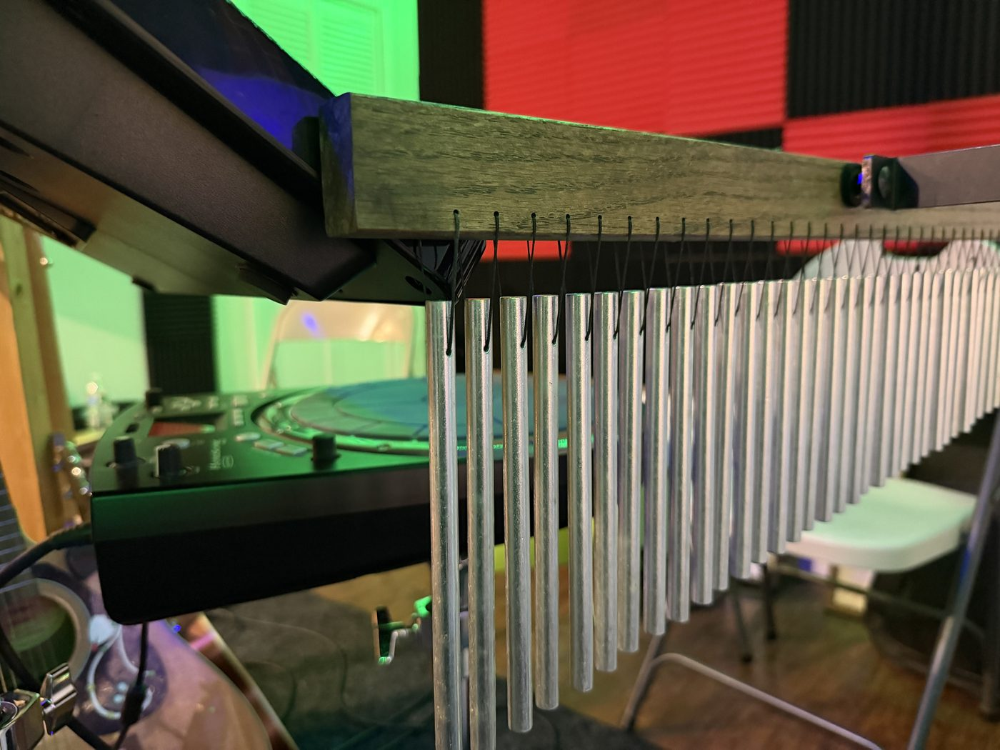
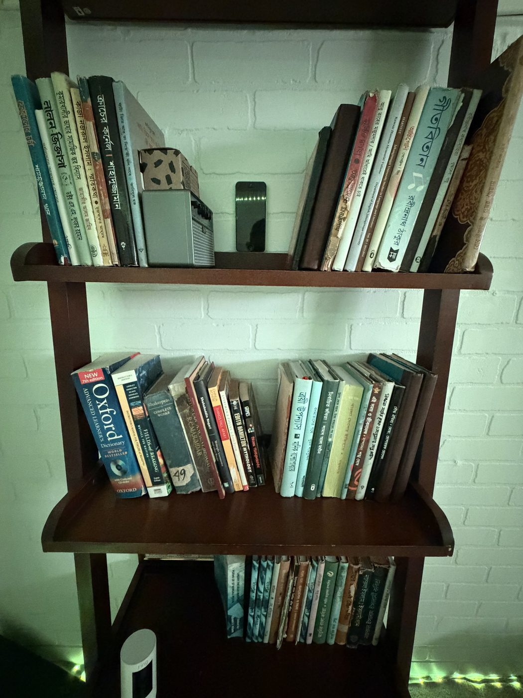
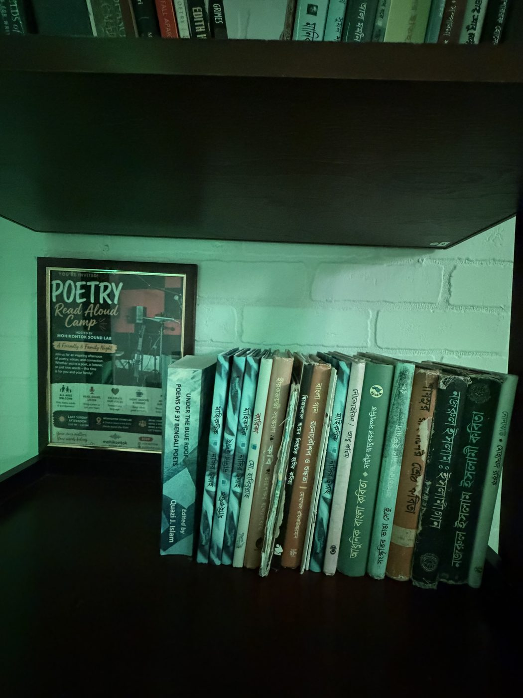
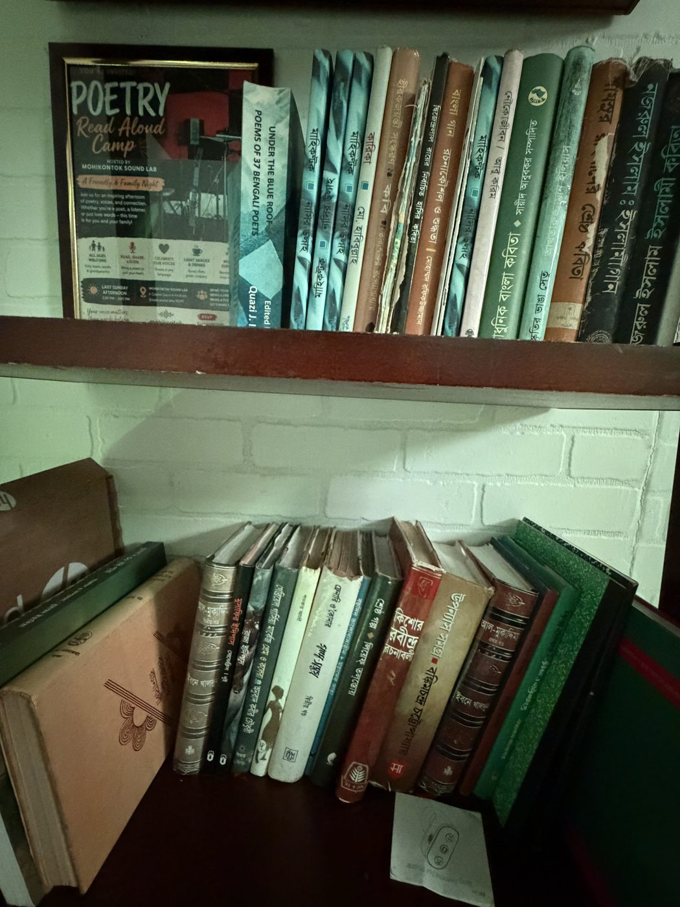
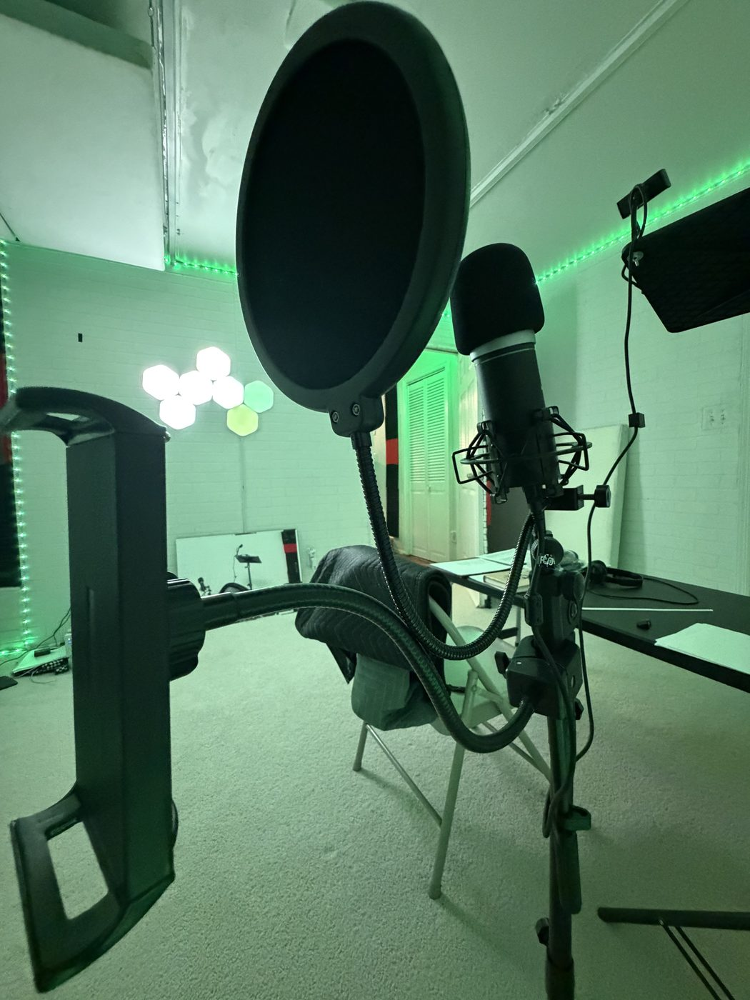
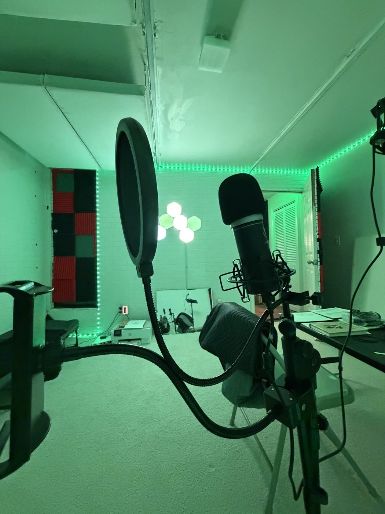
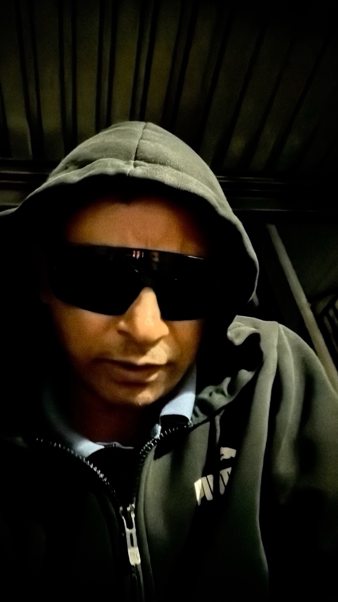

The Studio
A Bronx recording studio for music, spoken poetry, and voiceover, at 1389 Kearney Ave, Bronx, NY 10465.
The studio has two rooms: a red-and-black live room, and a white-brick literary booth for spoken poetry and voiceover. Sessions are by appointment.
Rates and the booking form are on the home page. Contact details are on the Contact page.
Venue photos













